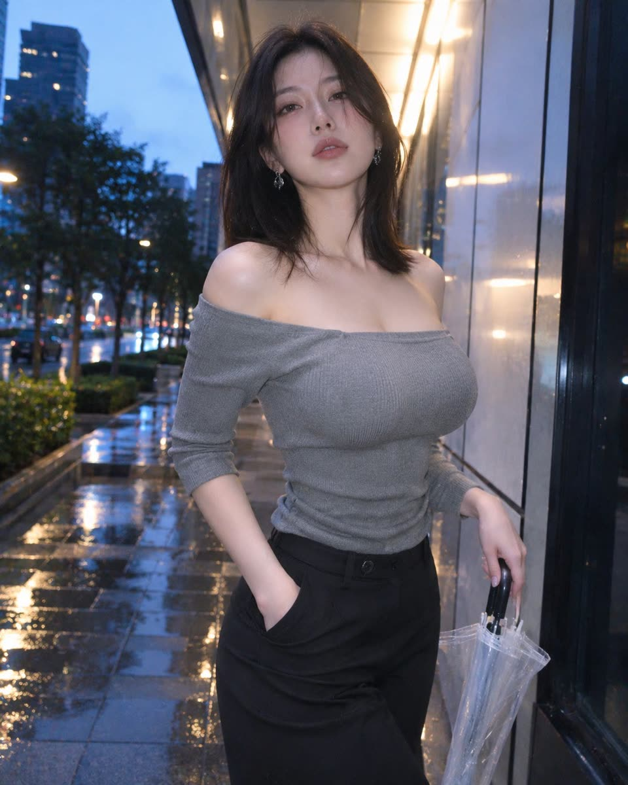

Blue-hour city portrait after rain: silver knit, folded clear umbrella, wet reflections and warm architectural light (model unknown)
MOO-102Moodunknownby @PupWisp2026-11-24

A calm editorial portrait that plays cool blue ambient light against warm building light, with a short negative prompt against plastic skin and stiff poses. A ready mood frame for knitwear, eyewear or city-living campaigns.
Prompt
Vertical 4:5 photorealistic fashion portrait of a fictional 25-year-old adult East Asian woman with shoulder-length dark hair, naturally expressive brown eyes, subtle rose-toned makeup and realistic skin texture. She wears a silver-gray off-the-shoulder knit top, tailored black trousers and minimalist silver earrings. Standing beneath the canopy of a modern city building after rainfall, she holds a folded transparent umbrella at her side and looks toward the camera with a relaxed, confident expression. Blue-hour ambient light, warm architectural lighting, wet pavement reflections, natural posture, realistic anatomy, anatomically accurate hands, 50mm lens, shallow depth of field, subtle analog film grain, authentic editorial photography. No text, watermark or border. Negative prompt: Plastic skin, excessive retouching, artificial facial features, distorted anatomy, extra fingers, stiff poses, CGI rendering, text, watermark, collage.
Our Seedance 2.5 adaptation
[ADAPTED for Seedance 2.5 by Grok Bot; not the creator's prompt. Follows the official BytePlus Seedance 2.5 prompt guide and its official sd25-pe prompt-optimizer skill: parameters only on the API line (not in the prompt body), subject + action + scene, then visuals, camera (move, subject, start, direction, arrival) and sound; only the source's own exclusions are kept.] API: duration 6, ratio 4:5 (taken from the first frame), resolution 1080p, generate_audio true; first_frame = the MOO-102 still. 【Subject】The woman exactly as in the first frame: shoulder-length dark hair, silver-grey off-the-shoulder knit, black trousers, folded clear umbrella in one hand. 【Action】She stands under the building canopy, looks out at the street, then turns her head back to the lens with a relaxed, confident look; a few drops fall from the canopy edge behind her. 【Scene】The same modern city building after rain, blue-hour ambient light, warm architectural light, wet pavement reflections. 【Camera】Slow push-in from medium to medium close-up, 50mm look, shallow depth of field, ending on her face. 【Visuals】Cool blue ambient light against warm practical light, realistic skin texture, subtle analog film grain. 【Sound】Light dripping, wet tyres passing, distant city hum.
Tags: blue hour, after rain, editorial portrait, warm/cool contrast, 50mm, film grain, negative prompt